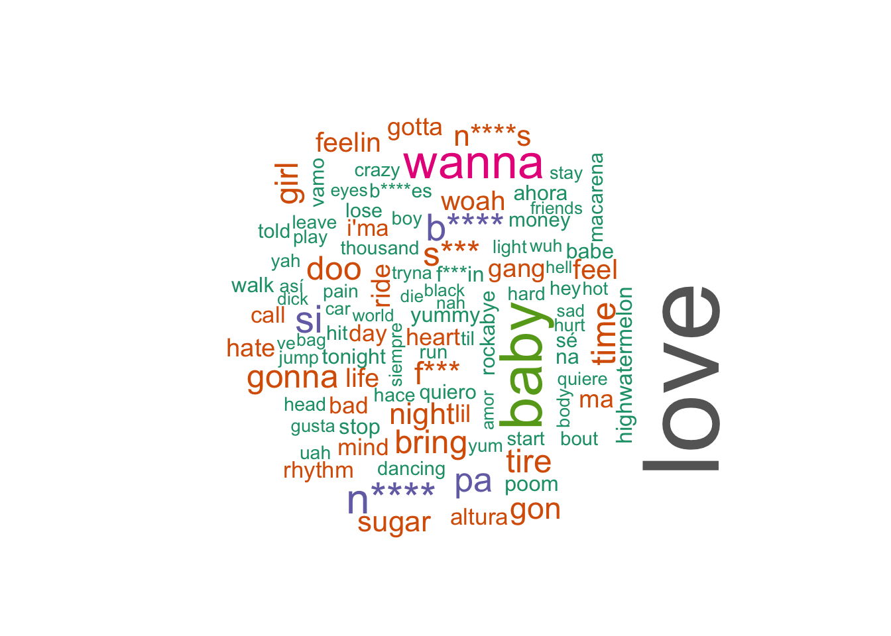
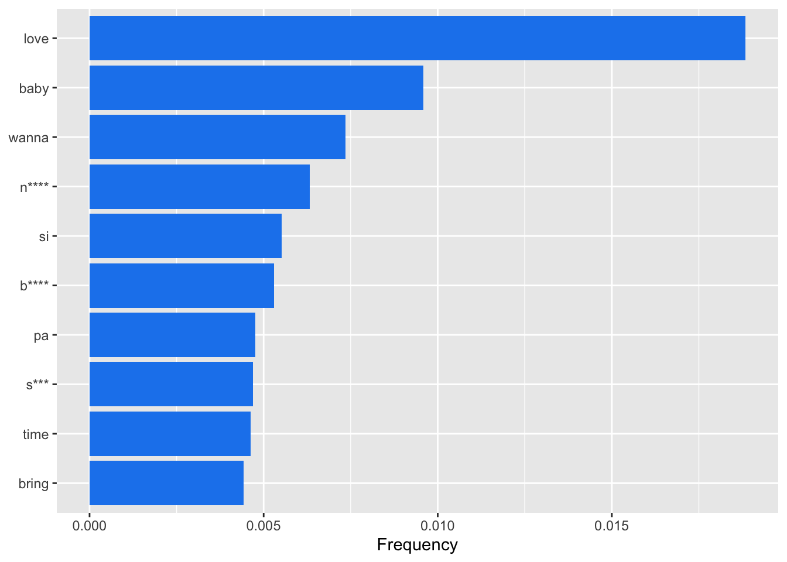
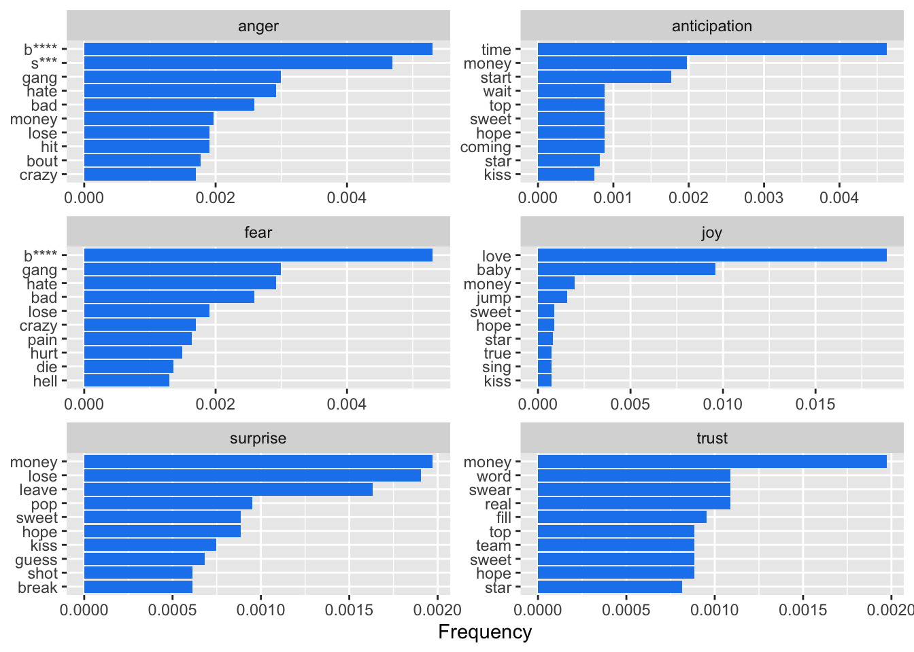
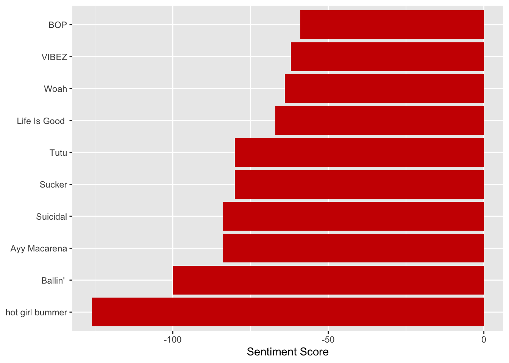
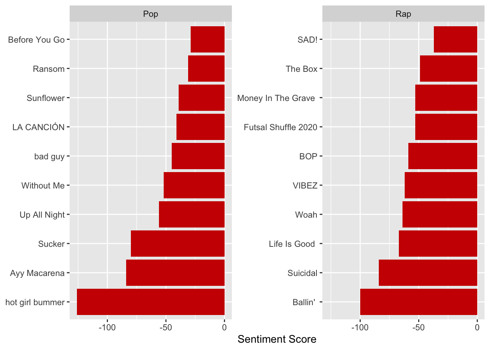

Sentiment Analysis
What words are the most popular songs using?
All data is from the top 100 spotify songs
To analyze what today’s top songs are about, a sentiment analysis was used to examine some of the most popular songs on Spotify. The songs were analyzed word by word in a few different ways. The first way was a simple examination of word frequency, which analyzed which words were most common throughout all the songs. Next, word frequency was examined based on the type of sentiment being conveyed. Finally, each song was analyzed based on if its content had a generally positive or generally negative sentiment.
The following packages were used to conduct the data wrangling and analysis:
Total Word Frequency
First, a surface level analysis of the most common words was conducted. The frequency of the appearance of each word throughout all songs was calculated and put into the visuals below. For the word cloud, the size of each word was scaled to a factor of the frequency of the word. For a view of the top words and their frequency, see the next tab which shows a bar graph of the top 10 words.
Inappropriate language has been filtered for viewers
Word Cloud of the Most Common Words
Inappropriate language has been filtered for viewers
Top Ten Most Common Words

Perhaps expectedly, many of the most commonly used words are swear words which take three out of the top 10 words places. This leads to the question of if edginess and shock factor are common throughout the top songs; however, the most common word, which nearly doubles the second most common word, is “Love”. These seem to present two completely different sentiments. It seems that only analysing the frequency of words has not given much value to finding any meaningful sentiment patterns in the top songs.
Emotional Sentiments
To examine the emotions that these top songs elicit, the top songs were paired with the NRC Emotion Lexicon. This lexicon is a collection of over 5600 English words and their associations with basic emotions such as anger, joy, and surprise. Unfortunately, due to the lexicon being English specific, many of the Spanish words have been left out of the analysis. Although this may be true, this still has valuable data for what sentiments top songs use.

According to the visual, top words relating to emotions of joy, anger, anticipation, and fear are all more common than the top words from emotions of surprise and trust. Still, with the range of emotions that have relatively high frequency words, it seems that there may not be one most popular emotion displayed in these top songs, but instead many different emotions that are elicited.
All Song Sentiments
To examine if the top songs had generally positive or negative sentiments, each song was paired with the Afinn Sentiment Lexicon which contains over 2400 words rated on a scale from -5 sentiment to +5 sentiment. The higher the score, the more positive the sentiment of the song. Below, the top 10 and bottom 10 songs are listed.
Top 10 Positive Songs
Top 10 Negative Songs

Based on the visual, it is clear that popular songs can have both very positive and very negative sentiments. This does not seem to show a theme between these common songs.
Pop vs. Rap
Finally, although the most popular songs themselves may represent a wide range of positive and negative sentiments, an analysis analyzing the top pop songs compared to rap songs may tell a different story. Below, the top 10 and bottom 10 of each category are shown against one another.
Top 10 Positive Songs by Genre
Top 10 Negative Songs by Genre

Although the number of pop songs is greater than the number of rap songs, the differences are still valuable. It is clear that the top 10 songs in positive sentiment are much more positive for pop songs, with over half of the most positive rap songs having negative total sentiments, while all the pop songs have more positive sentiments than the most positive rap song. On the other hand, the 10 most negative pop songs seem to be just as negative as the 10 most negative rap songs. This suggests that a popular rap song may need to have a more negative sentiment in order to gain its popularity, while pop songs may have more room to have either a positive or a negative sentiment.
Conclusion
Overall, there does not seem to be an overtly glaring conclusion to be drawn from the data. The top words span a wide range of sentiments and there are plenty of songs with both very positive and very negative sentiments that are popular. The most convincing conclusion which is supported by the data is that popular rap songs usually require a fairly negative sentiment, while a genre such as pop can have a wide range of sentiments and still be popular. These findings may seem disappointing, as the data does not suggest much of a pattern between these top songs; however, this can also be viewed in a positive light. There seems to be no one way to make a popular song, and that itself may be part of the beauty of music.
References
Dietrich, J. P., and Leoncio, W. (2023), Citation: Software citation tools.
Wickham, H., Averick, M., Bryan, J., Chang, W., McGowan, L. D., François, R., Grolemund, G., Hayes, A., Henry, L., Hester, J., Kuhn, M., Pedersen, T. L., Miller, E., Bache, S. M., Müller, K., Ooms, J., Robinson, D., Seidel, D. P., Spinu, V., Takahashi, K., Vaughan, D., Wilke, C., Woo, K., and Yutani, H. (2019), “Welcome to the tidyverse,” Journal of Open Source Software, 4, 1686. https://doi.org/10.21105/joss.01686.